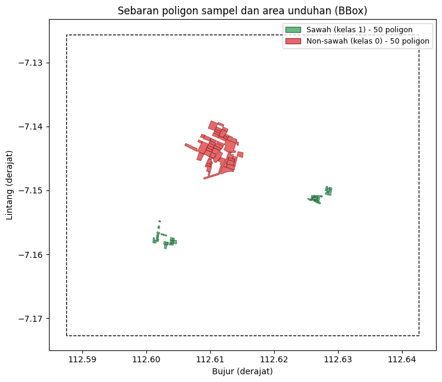
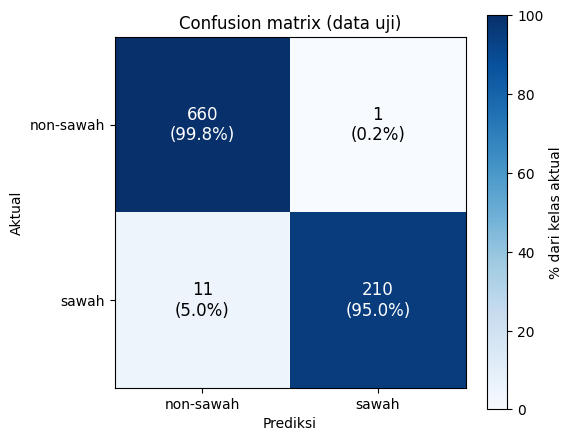
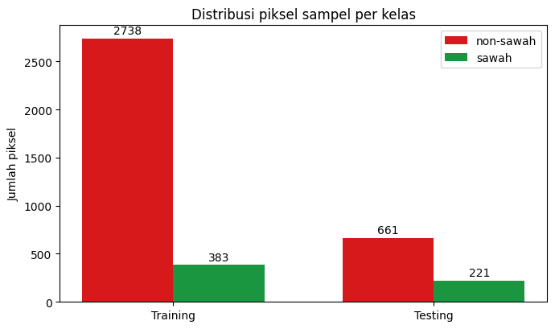
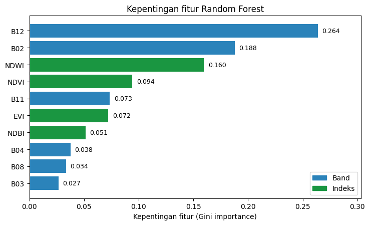
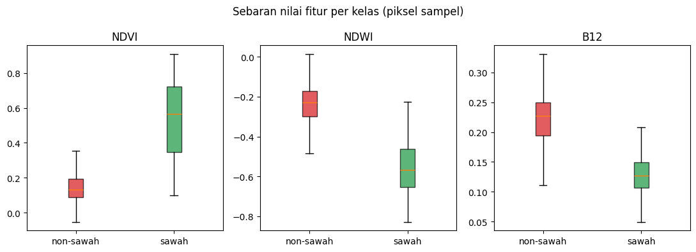
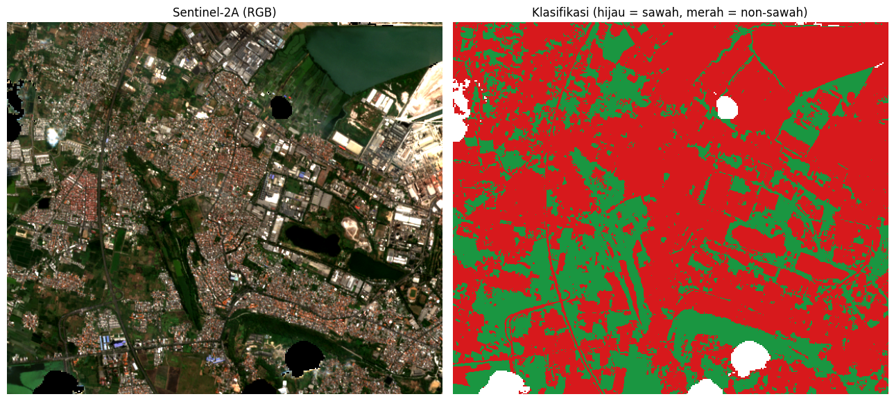

Klasifikasi Sawah vs Non-Sawah Menggunakan Sentinel-2A dan Random Forest#
Notebook ini mengklasifikasikan tutupan lahan menjadi dua kelas (sawah dan non-sawah) dari citra satelit Sentinel-2A Level-2A yang diunduh otomatis dari Copernicus Data Space dalam format GeoTIFF. Model yang dipakai adalah Random Forest (scikit-learn), dan hasil akhirnya berupa peta klasifikasi klasifikasi_sawah_s2a.tif.
Alur kerja#
Mengatur parameter
Membaca sampel poligon (shapefile) dan menentukan area unduhan
Mengunduh citra Sentinel-2A dari Copernicus
Membaca citra GeoTIFF
Menghitung fitur: band + indeks spektral (NDVI, NDWI, NDBI, EVI)
Rasterisasi poligon sampel menjadi piksel berlabel
Membagi data training dan testing per poligon
Melatih dan mengevaluasi model
Mengklasifikasikan seluruh citra
Menyimpan GeoTIFF dan membuat peta hasil
0. Persiapan#
Library yang dibutuhkan:
pip install requests rasterio scikit-learn numpy matplotlib geopandas
Akun Copernicus (sekali saja):
Buka https://shapps.dataspace.copernicus.eu/dashboard dan login.
Masuk ke User settings → OAuth clients → Create, lalu salin Client ID dan Client Secret.
Masukkan keduanya lewat environment variable
CDSE_CLIENT_IDdanCDSE_CLIENT_SECRET, atau ketik saat notebook memintanya.
Penting: jangan menulis Client Secret langsung di dalam notebook atau repository. Notebook yang dipublikasikan ke web statis bisa dibaca siapa saja.
Struktur folder (di folder yang sama dengan notebook):
klasifikasi_sawah/
├── klasifikasi_sawah.ipynb
├── datasawah50/ → sawah.shp (+ .dbf .shx .prj)
└── nonsawah/ → nonsawah.shp (+ .dbf .shx .prj)
# Hapus tanda # di baris berikut jika library belum terpasang
# %pip install requests rasterio scikit-learn numpy matplotlib geopandas
1. Import library dan parameter#
Library yang dipakai dan fungsinya:
geopandas / shapely / rasterio: membaca shapefile, mengubah proyeksi, merasterisasi poligon, membaca dan menulis GeoTIFF
requests: berkomunikasi dengan API Copernicus (token, katalog, unduhan)
numpy: operasi array citra
scikit-learn: Random Forest dan metrik evaluasi
matplotlib: visualisasi
Semua pengaturan dikumpulkan di satu sel agar mudah diubah.
import datetime as dt
import getpass
import math
import os
from pathlib import Path
import geopandas as gpd
import matplotlib.pyplot as plt
import numpy as np
import rasterio
import requests
from matplotlib.colors import ListedColormap
from rasterio import features
from rasterio.warp import transform_bounds, transform_geom
from sklearn.ensemble import RandomForestClassifier
from sklearn.metrics import (accuracy_score, classification_report,
cohen_kappa_score, confusion_matrix)
BASE_DIR = Path.cwd()
# --- Pencarian citra ---
START_DATE = "2026-06-01" # rentang tanggal pencarian citra
END_DATE = "2026-09-30"
PLATFORM_PREFIX = "S2A" # hanya Sentinel-2A. Isi None untuk semua satelit Sentinel-2
MAX_CLOUD = 30 # % awan maksimum (level tile) untuk kandidat scene
MAX_TRIES = 5 # coba maks. N scene terbaik sampai area sampel cukup bersih
MIN_VALID = 0.90 # minimal fraksi piksel bebas awan di area unduhan
MASK_CLOUD = True # buang awan/bayangan awan/salju memakai band SCL
BUFFER_M = 1500 # margin area unduhan di sekeliling sampel (meter)
# --- Sampel & model ---
N_SAMPLE = 50 # jumlah poligon sampel PER KELAS
FILE_SAWAH = BASE_DIR / "datasawah50" / "sawah.shp" # kelas = 1
FILE_NONSAWAH = BASE_DIR / "nonsawah" / "nonsawah.shp" # kelas = 0
TRAIN_FRAC = 0.7 # porsi poligon untuk training (sisanya testing)
N_TREES = 200
SEED = 42
# --- File ---
# Jika file ini sudah ada, unduhan dilewati (boleh juga diisi TIF manual dari
# Copernicus Browser dengan band B02,B03,B04,B08,B11,B12 berurutan).
TIF_IN = BASE_DIR / "sentinel2a_aoi.tif"
INFO_TXT = BASE_DIR / "sentinel2a_aoi_info.txt"
OUT_TIF = BASE_DIR / "klasifikasi_sawah_s2a.tif"
OUT_PNG = BASE_DIR / "peta_klasifikasi.png"
OUT_TXT = BASE_DIR / "hasil_evaluasi.txt"
BAND_NAMES = ["B02", "B03", "B04", "B08", "B11", "B12"]
TOKEN_URL = "https://identity.dataspace.copernicus.eu/auth/realms/CDSE/protocol/openid-connect/token"
CATALOG_URL = "https://sh.dataspace.copernicus.eu/api/v1/catalog/1.0.0/search"
PROCESS_URL = "https://sh.dataspace.copernicus.eu/api/v1/process"
LOG = []
def log(*args):
# Cetak ke layar sekaligus simpan ke LOG untuk file hasil_evaluasi.txt
s = " ".join(str(a) for a in args)
print(s)
LOG.append(s)
Penjelasan parameter penting
Parameter |
Arti |
|---|---|
|
Rentang waktu pencarian citra |
|
Hanya memakai satelit Sentinel-2A sesuai ketentuan tugas |
|
Batas tutupan awan per tile; scene yang lebih berawan dibuang |
|
Minimal 90% piksel di area sampel harus bebas awan |
|
Margin area unduhan di sekitar poligon sampel |
|
Jumlah poligon per kelas (sesuai tugas) |
|
70% poligon untuk training, 30% untuk testing |
|
Angka acak tetap agar hasil dapat direproduksi |
2. Sampel: membaca shapefile dan memilih 50 poligon per kelas#
Sampel latih berupa poligon (bukan titik) yang digambar di atas citra. Fungsi load_samples_shp:
Membaca shapefile dengan GeoPandas.
Membuang fitur tanpa geometri.
Memproyeksikan ke WGS-84 (EPSG:4326) agar kedua kelas memakai sistem koordinat yang sama.
Mengambil 50 poligon secara acak (dengan
SEEDtetap) bila jumlah poligon lebih dari 50.
Dari kumpulan poligon itu dihitung juga bounding box (BBOX) beserta margin BUFFER_M. Kotak inilah yang menjadi area unduhan citra, sehingga data yang diunduh tetap kecil dan hanya mencakup area sampel.
def load_samples_shp(path, n):
"""
Membaca file Shapefile (.shp) menggunakan GeoPandas,
memproyeksikan ke WGS-84 (EPSG:4326) agar konsisten,
lalu mengambil maksimum n poligon secara acak.
Mengembalikan list geometri dalam format GeoJSON-dict (koordinat lon/lat).
"""
gdf = gpd.read_file(path)
total = len(gdf)
# Hanya simpan fitur yang memiliki geometri
gdf = gdf[gdf.geometry.notna()].copy()
# Proyeksikan ke WGS-84 jika belum
if gdf.crs is None:
log(f"PERINGATAN: {Path(path).name} tidak memiliki CRS. Diasumsikan EPSG:4326.")
elif gdf.crs.to_epsg() != 4326:
gdf = gdf.to_crs(epsg=4326)
if len(gdf) > n:
idx = np.random.default_rng(SEED).choice(len(gdf), n, replace=False)
gdf = gdf.iloc[sorted(idx)].copy()
elif len(gdf) < n:
log(f"PERINGATAN: {Path(path).name} hanya berisi {total} poligon (< {n}).")
log(f"{Path(path).name}: {total} poligon di file -> dipakai {len(gdf)}")
# Kembalikan geometri sebagai list dict GeoJSON
from shapely.geometry import mapping
return [mapping(g) for g in gdf.geometry]
def iter_xy(c):
# Menelusuri koordinat bersarang (poligon -> ring -> titik)
if isinstance(c[0], (int, float)):
yield c[0], c[1]
else:
for s in c:
yield from iter_xy(s)
geoms_sawah = load_samples_shp(FILE_SAWAH, N_SAMPLE)
geoms_non = load_samples_shp(FILE_NONSAWAH, N_SAMPLE)
xy = [p for g in geoms_sawah + geoms_non for p in iter_xy(g["coordinates"])]
pad = BUFFER_M / 111000.0 # meter -> derajat (1 derajat ~ 111 km)
BBOX = (min(x for x, _ in xy) - pad, min(y for _, y in xy) - pad,
max(x for x, _ in xy) + pad, max(y for _, y in xy) + pad)
log("BBox area (lon/lat):", tuple(round(v, 5) for v in BBOX))
sawah.shp: 57 poligon di file -> dipakai 50
nonsawah.shp: 62 poligon di file -> dipakai 50
BBox area (lon/lat): (112.58753, -7.17266, 112.6426, -7.12557)
Peta sebaran sampel#
Visualisasi di bawah memperlihatkan posisi poligon sampel. Poligon hijau adalah sampel sawah (kelas 1) dan poligon merah adalah sampel non-sawah (kelas 0). Garis putus-putus menandai BBOX area unduhan.
from shapely.geometry import shape
from shapely.geometry import box as shp_box
fig, ax = plt.subplots(figsize=(9, 6.5))
gpd.GeoSeries([shape(g) for g in geoms_non]).plot(
ax=ax, facecolor="#d7191c", edgecolor="#7f0000", alpha=0.65, linewidth=0.6)
gpd.GeoSeries([shape(g) for g in geoms_sawah]).plot(
ax=ax, facecolor="#1a9641", edgecolor="#00441b", alpha=0.65, linewidth=0.6)
gpd.GeoSeries([shp_box(*BBOX)]).boundary.plot(ax=ax, color="k", linestyle="--", linewidth=1)
ax.legend(handles=[
plt.Rectangle((0, 0), 1, 1, fc="#1a9641", ec="#00441b", alpha=0.65,
label=f"Sawah (kelas 1) - {len(geoms_sawah)} poligon"),
plt.Rectangle((0, 0), 1, 1, fc="#d7191c", ec="#7f0000", alpha=0.65,
label=f"Non-sawah (kelas 0) - {len(geoms_non)} poligon"),
], loc="upper right", fontsize=9)
ax.set_title("Sebaran poligon sampel dan area unduhan (BBox)")
ax.set_xlabel("Bujur (derajat)")
ax.set_ylabel("Lintang (derajat)")
ax.set_aspect("equal")
plt.tight_layout()
plt.show()

3. Mengunduh Sentinel-2A (GeoTIFF) dari Copernicus#
Pengunduhan memakai Sentinel Hub API di Copernicus Data Space dalam tiga tahap:
get_token: meminta token akses OAuth dengan Client ID dan Secret.search_scenes: mencari scene Sentinel-2 L2A di atasBBOXpada rentang tanggal tertentu. Scene difilter berdasarkan satelit (S2A) dan tutupan awan, lalu diurutkan dari yang paling bersih.download_scene: mengunduh areaBBOXdari scene terpilih lewat Process API dengan ketentuan:proyeksi UTM (zona dihitung otomatis dengan
utm_epsg), resolusi 10 m6 band reflektansi: B02 (biru), B03 (hijau), B04 (merah), B08 (NIR), B11 (SWIR-1), B12 (SWIR-2)
piksel awan, bayangan awan, cirrus, dan salju dibuang memakai band SCL (Scene Classification Layer) lewat evalscript. Kelas SCL yang dibuang: 0, 1, 3, 8, 9, 10, 11.
Fungsi fetch_sentinel2a mencoba hingga MAX_TRIES scene terbaik, lalu memakai scene yang fraksi piksel validnya mencapai MIN_VALID (atau yang terbaik bila tidak ada yang mencapai). Hasilnya disimpan sebagai sentinel2a_aoi.tif beserta catatan metadata sentinel2a_aoi_info.txt.
Bila sentinel2a_aoi.tif sudah ada, langkah unduh dilewati otomatis. Kamu juga bisa menaruh GeoTIFF dari Copernicus Browser secara manual, asalkan urutan bandnya sama.
# Kredensial hanya diminta jika citra belum pernah diunduh.
# Isi lewat environment variable CDSE_CLIENT_ID / CDSE_CLIENT_SECRET, atau ketik saat diminta.
if TIF_IN.exists():
CLIENT_ID = CLIENT_SECRET = None
else:
CLIENT_ID = os.environ.get("CDSE_CLIENT_ID") or input("CDSE Client ID: ").strip()
CLIENT_SECRET = os.environ.get("CDSE_CLIENT_SECRET") or getpass.getpass("CDSE Client Secret: ").strip()
def get_token():
r = requests.post(TOKEN_URL, data={
"grant_type": "client_credentials",
"client_id": CLIENT_ID,
"client_secret": CLIENT_SECRET,
}, timeout=60)
if r.status_code != 200:
raise RuntimeError(f"Gagal mengambil token ({r.status_code}): {r.text[:300]}\n"
"Cek CLIENT_ID dan CLIENT_SECRET (dashboard Sentinel Hub).")
return r.json()["access_token"]
def search_scenes(token):
body = {
"collections": ["sentinel-2-l2a"],
"datetime": f"{START_DATE}T00:00:00Z/{END_DATE}T23:59:59Z",
"bbox": list(BBOX),
"limit": 100,
}
headers = {"Authorization": f"Bearer {token}"}
feats = []
while True:
r = requests.post(CATALOG_URL, json=body, headers=headers, timeout=120)
if r.status_code != 200:
raise RuntimeError(f"Pencarian katalog gagal ({r.status_code}): {r.text[:300]}")
js = r.json()
feats += js.get("features", [])
nxt = js.get("context", {}).get("next")
if not nxt:
break
body["next"] = nxt
cand = []
for it in feats:
p = it.get("properties", {})
cc = p.get("eo:cloud_cover")
if cc is None or cc > MAX_CLOUD:
continue
if PLATFORM_PREFIX and not it["id"].upper().startswith(PLATFORM_PREFIX):
continue
cand.append((cc, p["datetime"], it["id"]))
cand.sort() # urut dari awan paling sedikit
log(f"Scene ditemukan: {len(feats)} | lolos filter ({PLATFORM_PREFIX or 'semua'}, "
f"awan <= {MAX_CLOUD}%): {len(cand)}")
return cand
def utm_epsg(lon, lat):
# Kode EPSG zona UTM (326xx = utara, 327xx = selatan)
return (32700 if lat < 0 else 32600) + int((lon + 180) // 6) + 1
def build_evalscript():
# Evalscript dijalankan di server Copernicus: mengembalikan 6 band,
# dan 0 untuk piksel tanpa data / awan / bayangan / cirrus / salju (kelas SCL).
mask = " || [0,1,3,8,9,10,11].indexOf(s.SCL) >= 0" if MASK_CLOUD else ""
return ('//VERSION=3\n'
'function setup() {\n'
' return {\n'
' input: [{bands: ["B02","B03","B04","B08","B11","B12","SCL","dataMask"]}],\n'
' output: {bands: 6, sampleType: "FLOAT32"}\n'
' };\n'
'}\n'
'function evaluatePixel(s) {\n'
f' var bad = (s.dataMask == 0){mask};\n'
' if (bad) return [0,0,0,0,0,0];\n'
' return [s.B02, s.B03, s.B04, s.B08, s.B11, s.B12];\n'
'}\n')
def download_scene(token, when):
"""Unduh area sampel dari satu scene: UTM, 10 m, 6 band reflektansi (float32)."""
epsg = utm_epsg((BBOX[0] + BBOX[2]) / 2, (BBOX[1] + BBOX[3]) / 2)
minx, miny, maxx, maxy = transform_bounds("EPSG:4326", f"EPSG:{epsg}", *BBOX)
# Bulatkan ke kelipatan 10 m agar selaras dengan grid piksel Sentinel-2
minx, miny = math.floor(minx / 10) * 10, math.floor(miny / 10) * 10
maxx, maxy = math.ceil(maxx / 10) * 10, math.ceil(maxy / 10) * 10
w, h = (maxx - minx) // 10, (maxy - miny) // 10
if w > 2500 or h > 2500:
raise RuntimeError(f"Area terlalu besar ({w}x{h} piksel, maks 2500). "
"Kecilkan BUFFER_M.")
t = dt.datetime.fromisoformat(when.replace("Z", "+00:00")).astimezone(dt.timezone.utc)
fmt = "%Y-%m-%dT%H:%M:%SZ"
body = {
"input": {
"bounds": {
"bbox": [minx, miny, maxx, maxy],
"properties": {"crs": f"http://www.opengis.net/def/crs/EPSG/0/{epsg}"},
},
"data": [{
"type": "sentinel-2-l2a",
"dataFilter": {
"timeRange": {"from": (t - dt.timedelta(minutes=1)).strftime(fmt),
"to": (t + dt.timedelta(minutes=1)).strftime(fmt)},
"mosaickingOrder": "leastCC",
},
}],
},
"output": {
"resx": 10, "resy": 10,
"responses": [{"identifier": "default", "format": {"type": "image/tiff"}}],
},
"evalscript": build_evalscript(),
}
r = requests.post(PROCESS_URL, json=body, timeout=300, headers={
"Authorization": f"Bearer {token}", "Accept": "image/tiff"})
if r.status_code != 200:
raise RuntimeError(f"Unduhan gagal ({r.status_code}): {r.text[:400]}")
return r.content, epsg
def valid_fraction(tif_bytes):
# Fraksi piksel yang berisi data (bukan 0 / NaN) di area unduhan
from rasterio.io import MemoryFile
with MemoryFile(tif_bytes) as mf, mf.open() as src:
arr = src.read()
return float((np.any(arr != 0, axis=0) & np.isfinite(arr).all(axis=0)).mean())
def fetch_sentinel2a():
token = get_token()
cand = search_scenes(token)
if not cand:
raise RuntimeError(
f"Tidak ada scene {PLATFORM_PREFIX or ''} dengan awan <= {MAX_CLOUD}% pada "
f"{START_DATE} s/d {END_DATE}. Perlebar START_DATE/END_DATE atau naikkan "
"MAX_CLOUD (atau PLATFORM_PREFIX=None untuk semua satelit).")
best = None
for cc, when, sid in cand[:MAX_TRIES]:
data, epsg = download_scene(token, when)
frac = valid_fraction(data)
log(f" {sid[:40]}... | {when} | awan tile {cc:.1f}% | piksel valid {frac:.1%}")
if best is None or frac > best["frac"]:
best = dict(frac=frac, data=data, when=when, sid=sid, cc=cc, epsg=epsg)
if frac >= MIN_VALID:
break
TIF_IN.write_bytes(best["data"])
INFO_TXT.write_text(
f"Scene : {best['sid']}\nAkuisisi : {best['when']}\n"
f"Awan tile: {best['cc']:.1f}%\nPiksel valid di AOI: {best['frac']:.1%}\n"
f"CRS : EPSG:{best['epsg']}\nResolusi : 10 m\n"
f"Band : {', '.join(BAND_NAMES)} (reflektansi 0-1)\n"
f"Masking awan (SCL): {MASK_CLOUD}\n", encoding="utf-8")
log(f"Scene dipakai: {best['sid']} ({best['when']}), valid {best['frac']:.1%}")
log("Tersimpan:", TIF_IN, "dan", INFO_TXT)
if TIF_IN.exists():
log(f"{TIF_IN.name} sudah ada -> langkah unduh dilewati.")
else:
fetch_sentinel2a()
sentinel2a_aoi.tif sudah ada -> langkah unduh dilewati.
Informasi citra yang dipakai#
Setelah unduhan selesai, ringkasan scene tersimpan di sentinel2a_aoi_info.txt. Sel berikut menampilkan isinya.
print(INFO_TXT.read_text(encoding="utf-8"))
Scene : S2A_MSIL2A_20260713T024141_N0512_R089_T49MFN_20260713T071619.SAFE
Akuisisi : 2026-07-13T03:00:01.845Z
Awan tile: 4.0%
Piksel valid di AOI: 97.9%
CRS : EPSG:32749
Resolusi : 10 m
Band : B02, B03, B04, B08, B11, B12 (reflektansi 0-1)
Masking awan (SCL): True
Informasi |
Nilai |
Keterangan |
|---|---|---|
Scene |
|
|
Waktu akuisisi |
13 Juli 2026, 03:00 UTC (sekitar 10:00 WIB) |
Masuk dalam rentang pencarian |
Tutupan awan (level tile) |
4,0% |
Jauh di bawah batas |
Piksel valid di area sampel |
97,9% |
Di atas batas |
Sistem koordinat |
EPSG:32749 (UTM zona 49S) |
Satuan meter, sehingga luas bisa dihitung langsung |
Resolusi |
10 m |
1 piksel = 100 m² |
Band |
B02, B03, B04, B08, B11, B12 |
Reflektansi 0 sampai 1 |
Masking awan (SCL) |
Ya |
Kelas awan, bayangan awan, cirrus, dan salju dibuang |
Mengapa tanggal akuisisi penting. Peta ini menggambarkan kondisi lahan pada 13 Juli 2026. Pada bulan Juli umumnya musim kemarau di Jawa Timur, sehingga sawah bisa berada pada berbagai fase (masih digenangi, vegetatif, sudah panen, atau bera). Fase tersebut mengubah nilai NDVI, NDWI, dan band SWIR, sehingga hasil klasifikasi pada tanggal lain dapat berbeda.
4. Membaca citra GeoTIFF#
Citra dibaca dengan rasterio menjadi array stack berukuran (6 band, tinggi, lebar). Piksel yang seluruh bandnya bernilai 0 (hasil masking awan di server) atau tidak valid diubah menjadi NaN supaya tidak ikut dilatih maupun diklasifikasikan.
Dictionary B memetakan nama band ke arraynya (B["B04"] = band merah, dan seterusnya) agar rumus indeks mudah dibaca.
with rasterio.open(TIF_IN) as src:
stack = src.read().astype("float32")
crs, transform = src.crs, src.transform
if stack.shape[0] != len(BAND_NAMES):
raise RuntimeError(f"TIF punya {stack.shape[0]} band, harus {len(BAND_NAMES)} "
f"({', '.join(BAND_NAMES)}).")
invalid = np.all(stack == 0, axis=0) | ~np.isfinite(stack).all(axis=0)
stack[:, invalid] = np.nan
H, W = stack.shape[1:]
log(f"Ukuran citra: {W} x {H} piksel | CRS: {crs} | piksel tanpa data: {invalid.mean():.1%}")
B = dict(zip(BAND_NAMES, stack))
Ukuran citra: 611 x 524 piksel | CRS: EPSG:32749 | piksel tanpa data: 2.1%
5. Fitur: band spektral + indeks#
Selain 6 band asli, ditambahkan 4 indeks spektral yang membantu memisahkan sawah dari non-sawah. Total ada 10 fitur per piksel.
Fitur |
Rumus |
Kegunaan |
|---|---|---|
NDVI |
|
Kehijauan/kerapatan vegetasi. Padi yang sedang tumbuh bernilai tinggi. |
NDWI |
|
Kandungan air permukaan. Sawah yang digenangi memberi nilai lebih tinggi. |
NDBI |
|
Area terbangun. Permukiman dan bangunan bernilai tinggi. |
EVI |
|
Vegetasi yang lebih tahan terhadap efek atmosfer dan saturasi dibanding NDVI. |
Suku 1e-10 pada fungsi nd() mencegah pembagian dengan nol.
def nd(a, b):
# Normalized difference: (a - b) / (a + b)
return (a - b) / (a + b + 1e-10)
ndvi = nd(B["B08"], B["B04"])
ndwi = nd(B["B03"], B["B08"])
ndbi = nd(B["B11"], B["B08"])
evi = 2.5 * (B["B08"] - B["B04"]) / (B["B08"] + 6 * B["B04"] - 7.5 * B["B02"] + 1)
feats = np.concatenate([stack, np.stack([ndvi, ndwi, ndbi, evi])]).astype("float32")
FEATURE_NAMES = BAND_NAMES + ["NDVI", "NDWI", "NDBI", "EVI"]
F = feats.shape[0]
6. Rasterisasi poligon sampel#
Poligon sampel (koordinat lon/lat) diubah ke sistem koordinat citra (transform_geom), lalu dirasterisasi menjadi grid yang sama dengan citra. Setiap piksel di dalam poligon diberi ID poligon, sedangkan piksel di luar poligon bernilai 0.
Hanya piksel yang berada di dalam poligon dan memiliki data valid (bebas awan) yang dipakai sebagai data berlabel (labeled). Notebook juga melaporkan jumlah poligon dan piksel yang terpakai per kelas, serta memberi peringatan bila ada poligon yang seluruhnya tertutup awan atau berada di luar citra.
poly_label, shapes, pid = {}, [], 0
for geoms, kelas in ((geoms_non, 0), (geoms_sawah, 1)):
for g in geoms:
pid += 1
poly_label[pid] = kelas
shapes.append((transform_geom("EPSG:4326", crs, g), pid))
poly_raster = features.rasterize(shapes, out_shape=(H, W), transform=transform,
fill=0, dtype="int32")
labeled = (poly_raster > 0) & np.isfinite(feats).all(axis=0)
present = np.unique(poly_raster[labeled])
for k, nama in ((0, "non-sawah"), (1, "sawah")):
ids = [p for p in present if poly_label[p] == k]
npx = int(np.isin(poly_raster, ids).sum())
log(f"Kelas {k} ({nama}): {len(ids)} poligon terpakai, {npx} piksel bebas awan")
if len(present) < len(poly_label):
log(f"PERINGATAN: {len(poly_label) - len(present)} poligon tidak punya piksel valid "
"(tertutup awan atau di luar citra).")
Kelas 0 (non-sawah): 50 poligon terpakai, 3399 piksel bebas awan
Kelas 1 (sawah): 50 poligon terpakai, 604 piksel bebas awan
Jumlah piksel per kelas#
Hasil rasterisasi di atas, diringkas dalam tabel (hanya piksel bebas awan yang dihitung):
Kelas |
Poligon terpakai |
Jumlah piksel |
Porsi |
|---|---|---|---|
Non-sawah (kelas 0) |
50 |
3.399 |
84,9% |
Sawah (kelas 1) |
50 |
604 |
15,1% |
Total |
100 |
4.003 |
100% |
Setiap piksel mewakili area 10 m x 10 m (100 m²). Piksel-piksel inilah yang menjadi data berlabel untuk melatih dan menguji model.
7. Pembagian data training dan testing per poligon#
Pembagian dilakukan per poligon, bukan per piksel. Piksel yang bertetangga di dalam satu poligon sangat mirip. Jika dipisah per piksel, sebagian piksel poligon yang sama akan masuk training dan sebagian lagi testing, sehingga akurasi tampak terlalu tinggi (spatial data leakage).
Dengan pembagian per poligon, 70% poligon tiap kelas menjadi data latih dan 30% sisanya menjadi data uji yang benar-benar belum pernah dilihat model.
Yang dipelajari model adalah piksel, bukan poligon. Setiap piksel di dalam poligon mewarisi label poligonnya (sawah atau non-sawah) dan menjadi satu baris data berisi 10 fitur dan 1 label. Poligon hanya dipakai sebagai dasar pembagian training dan testing.
rng = np.random.default_rng(SEED)
train_ids = []
for k in (0, 1):
ids = [p for p in present if poly_label[p] == k]
rng.shuffle(ids)
train_ids += ids[:max(1, int(round(len(ids) * TRAIN_FRAC)))]
m_train = labeled & np.isin(poly_raster, train_ids)
m_test = labeled & ~m_train
lab_map = np.zeros(poly_raster.max() + 1, dtype="uint8")
for p, k in poly_label.items():
lab_map[p] = k
X_train, y_train = feats[:, m_train].T, lab_map[poly_raster[m_train]]
X_test, y_test = feats[:, m_test].T, lab_map[poly_raster[m_test]]
log(f"Poligon training: {len(train_ids)} | testing: {len(present) - len(train_ids)}")
log(f"Piksel training: {len(y_train)} | testing: {len(y_test)}")
Poligon training: 70 | testing: 30
Piksel training: 3121 | testing: 882
Jumlah data training dan testing per kelas#
Sel berikut menghitung jumlah piksel training dan testing untuk masing-masing kelas.
for k, nama in ((0, "non-sawah"), (1, "sawah")):
n_tr = int((y_train == k).sum())
n_te = int((y_test == k).sum())
log(f"{nama:<10}: training {n_tr} piksel | testing {n_te} piksel | total {n_tr + n_te} piksel")
non-sawah : training 2738 piksel | testing 661 piksel | total 3399 piksel
sawah : training 383 piksel | testing 221 piksel | total 604 piksel
Kelas |
Poligon training |
Poligon testing |
Piksel training |
Piksel testing |
Total piksel |
|---|---|---|---|---|---|
Non-sawah |
35 |
15 |
2.738 |
661 |
3.399 |
Sawah |
35 |
15 |
383 |
221 |
604 |
Total |
70 |
30 |
3.121 |
882 |
4.003 |
Pembagian dilakukan per poligon (35 dari 50 poligon tiap kelas untuk training, 15 untuk testing), sedangkan yang masuk ke model adalah piksel di dalam poligon-poligon tersebut. Karena ukuran poligon berbeda-beda, proporsi piksel training dan testing tidak persis 70:30: untuk sawah 63,4% : 36,6%, untuk non-sawah 80,6% : 19,4%.
Jumlah poligon dan piksel per kelas#
Kelas |
Poligon training |
Poligon testing |
Piksel training |
Piksel testing |
Total piksel |
|---|---|---|---|---|---|
Non-sawah |
35 |
15 |
2.738 |
661 |
3.399 |
Sawah |
35 |
15 |
383 |
221 |
604 |
Total |
70 |
30 |
3.121 |
882 |
4.003 |
Data yang masuk ke Random Forest berbentuk tabel
X_trainberukuran(3121, 10)dengan labely_trainsebanyak 3.121 baris. Satu baris adalah satu piksel.Jumlah poligon kedua kelas sama (50 per kelas), tetapi jumlah pikselnya berbeda jauh karena poligon sawah lebih kecil. Dampaknya dibahas pada bagian Ketidakseimbangan kelas di bawah.
Hanya piksel bebas awan yang dihitung. Piksel di dalam poligon yang tertutup awan sudah dibuang oleh masking SCL.
8. Melatih dan mengevaluasi model#
Random Forest adalah kumpulan banyak pohon keputusan (di sini N_TREES = 200) yang masing-masing dilatih pada sampel data berbeda, lalu hasilnya digabung lewat voting. Metode ini tahan terhadap overfitting, tidak memerlukan normalisasi fitur, dan memberi ukuran kepentingan fitur.
Evaluasi memakai data uji (poligon yang tidak dipakai saat training):
Confusion matrix: baris = kelas aktual, kolom = kelas prediksi (urutan 0 = non-sawah, 1 = sawah).
Overall Accuracy: proporsi piksel uji yang diprediksi benar.
Kappa: kesepakatan prediksi dan aktual setelah mengoreksi kebetulan. Nilai mendekati 1 berarti sangat baik.
Precision / Recall / F1 per kelas, dan kepentingan fitur untuk melihat band atau indeks yang paling berperan.
rf = RandomForestClassifier(n_estimators=N_TREES, random_state=SEED, n_jobs=-1)
rf.fit(X_train, y_train)
pred_test = rf.predict(X_test)
log("\nConfusion matrix (baris=aktual, kolom=prediksi; urutan 0=non-sawah, 1=sawah):")
log(confusion_matrix(y_test, pred_test, labels=[0, 1]))
log(f"Overall Accuracy : {accuracy_score(y_test, pred_test):.4f}")
log(f"Kappa : {cohen_kappa_score(y_test, pred_test):.4f}")
log(classification_report(y_test, pred_test, labels=[0, 1],
target_names=["non-sawah", "sawah"], digits=3))
log("Kepentingan fitur:")
for n, v in sorted(zip(FEATURE_NAMES, rf.feature_importances_), key=lambda x: -x[1]):
log(f" {n:5s} {v:.3f}")
Confusion matrix (baris=aktual, kolom=prediksi; urutan 0=non-sawah, 1=sawah):
[[660 1]
[ 11 210]]
Overall Accuracy : 0.9864
Kappa : 0.9632
precision recall f1-score support
non-sawah 0.984 0.998 0.991 661
sawah 0.995 0.950 0.972 221
accuracy 0.986 882
macro avg 0.989 0.974 0.982 882
weighted avg 0.987 0.986 0.986 882
Kepentingan fitur:
B12 0.264
B02 0.188
NDWI 0.160
NDVI 0.094
B11 0.073
EVI 0.072
NDBI 0.051
B04 0.038
B08 0.034
B03 0.027
Membaca hasil evaluasi#
Data uji berisi 882 piksel dari 30 poligon yang tidak dipakai saat training (661 piksel non-sawah dan 221 piksel sawah).
Confusion matrix
Prediksi non-sawah |
Prediksi sawah |
|
|---|---|---|
Aktual non-sawah |
660 |
1 |
Aktual sawah |
11 |
210 |
Metrik per kelas
Kelas |
Precision |
Recall |
F1-score |
Jumlah piksel uji |
|---|---|---|---|---|
Non-sawah |
0,984 |
0,998 |
0,991 |
661 |
Sawah |
0,995 |
0,950 |
0,972 |
221 |
Overall Accuracy 0,9864: dari 882 piksel uji, 870 diprediksi benar (660 + 210).
Kappa 0,9632: kesepakatan antara prediksi dan data aktual sangat tinggi setelah dikoreksi kebetulan.
Precision sawah 0,995: dari 211 piksel yang diprediksi sawah, 210 benar. Hanya 1 piksel non-sawah yang salah dianggap sawah.
Recall sawah 0,950: dari 221 piksel sawah sebenarnya, 210 berhasil dikenali dan 11 terlewat (diprediksi non-sawah).
Heatmap berikut menampilkan confusion matrix yang sama. Angka di setiap kotak adalah jumlah piksel, dan persentase di dalam kurung dihitung per baris (per kelas aktual).
cm = confusion_matrix(y_test, pred_test, labels=[0, 1])
cm_pct = cm / cm.sum(axis=1, keepdims=True) * 100
kelas = ["non-sawah", "sawah"]
fig, ax = plt.subplots(figsize=(5.8, 4.8))
im = ax.imshow(cm_pct, cmap="Blues", vmin=0, vmax=100)
for i in range(2):
for j in range(2):
warna = "white" if cm_pct[i, j] > 50 else "black"
ax.text(j, i, f"{cm[i, j]}\n({cm_pct[i, j]:.1f}%)",
ha="center", va="center", color=warna, fontsize=12)
ax.set_xticks([0, 1])
ax.set_xticklabels(kelas)
ax.set_yticks([0, 1])
ax.set_yticklabels(kelas)
ax.set_xlabel("Prediksi")
ax.set_ylabel("Aktual")
ax.set_title("Confusion matrix (data uji)")
fig.colorbar(im, ax=ax, label="% dari kelas aktual")
plt.tight_layout()
plt.show()

Ketidakseimbangan kelas#
Jumlah piksel kedua kelas tidak seimbang: sawah hanya 604 piksel (15,1%) dari seluruh piksel sampel, sedangkan non-sawah 3.399 piksel (84,9%). Penyebabnya, poligon sawah yang digambar lebih kecil: rata-rata sekitar 12 piksel per poligon, dibanding sekitar 68 piksel per poligon untuk non-sawah.
Akibatnya, akurasi keseluruhan saja kurang cukup untuk menilai model. Pada data uji, model yang selalu menebak “non-sawah” sudah mencapai akurasi 74,9% (661 dari 882 piksel). Karena itu perhatikan juga metrik kelas sawah:
Recall sawah (0,950) lebih rendah dari recall non-sawah (0,998). Kelas yang lebih sedikit memang lebih sering terlewat: 5,0% piksel sawah uji (11 dari 221) salah diprediksi non-sawah, sedangkan hanya 0,15% piksel non-sawah uji (1 dari 661) salah diprediksi sawah.
F1 sawah (0,972) tetap tinggi, jadi ketidakseimbangan ini belum merusak kinerja secara serius pada data uji.
Bila ingin meningkatkan recall sawah, dua cara yang umum adalah menambah poligon sawah, atau memakai class_weight="balanced" pada RandomForestClassifier agar kelas minoritas diberi bobot lebih besar.
n_train = np.bincount(y_train, minlength=2)
n_test = np.bincount(y_test, minlength=2)
n_total = n_train + n_test
nama_kelas = ["non-sawah", "sawah"]
print(f"{'kelas':<10} {'training':>9} {'testing':>8} {'total':>7} {'porsi total':>12}")
for k in (0, 1):
print(f"{nama_kelas[k]:<10} {n_train[k]:>9} {n_test[k]:>8} {n_total[k]:>7} {n_total[k] / n_total.sum():>12.1%}")
x = np.arange(2)
lebar = 0.35
fig, ax = plt.subplots(figsize=(7, 4.2))
b0 = ax.bar(x - lebar / 2, [n_train[0], n_test[0]], lebar, color="#d7191c", label="non-sawah")
b1 = ax.bar(x + lebar / 2, [n_train[1], n_test[1]], lebar, color="#1a9641", label="sawah")
ax.bar_label(b0, padding=2)
ax.bar_label(b1, padding=2)
ax.set_xticks(x)
ax.set_xticklabels(["Training", "Testing"])
ax.set_ylabel("Jumlah piksel")
ax.set_title("Distribusi piksel sampel per kelas")
ax.legend()
plt.tight_layout()
plt.show()
kelas training testing total porsi total
non-sawah 2738 661 3399 84.9%
sawah 383 221 604 15.1%

Kepentingan fitur#
Diagram berikut mengurutkan kontribusi tiap fitur terhadap keputusan Random Forest (Gini importance). Batang biru adalah band asli dan batang hijau adalah indeks spektral.
Tiga fitur teratas adalah B12 (0,264), B02 (0,188), dan NDWI (0,160), yang bersama-sama menyumbang sekitar 61% dari total kepentingan. NDVI berada di urutan keempat (0,094).
Beberapa hal yang perlu diperhatikan saat menafsirkannya:
B12 adalah band inframerah gelombang pendek (SWIR-2) yang peka terhadap kandungan air dan kelembapan, sedangkan NDWI mengukur air permukaan. Keduanya sejalan dengan ciri sawah yang lembap atau tergenang dibanding permukiman.
NDVI yang biasanya jadi andalan untuk vegetasi justru bukan yang teratas. Kemungkinan penyebabnya, sampel non-sawah berupa permukiman, sehingga selisih kelembapan dan kecerahan sudah cukup memisahkan kedua kelas, tanpa harus bergantung pada kehijauan saja.
Nilai Gini importance terbagi di antara fitur yang saling berkorelasi (band dan indeks yang dihitung dari band yang sama). Jadi angka ini menunjukkan seberapa sering fitur dipakai model, bukan hubungan sebab-akibat, dan sebaiknya tidak ditafsirkan secara berlebihan.
from matplotlib.patches import Patch
urut = np.argsort(rf.feature_importances_)
nama = np.array(FEATURE_NAMES)[urut]
nilai = rf.feature_importances_[urut]
indeks = {"NDVI", "NDWI", "NDBI", "EVI"}
warna = ["#1a9641" if n in indeks else "#2b83ba" for n in nama]
fig, ax = plt.subplots(figsize=(7.5, 4.6))
ax.barh(nama, nilai, color=warna)
for y, v in enumerate(nilai):
ax.text(v + 0.004, y, f"{v:.3f}", va="center", fontsize=9)
ax.set_xlim(0, nilai.max() * 1.15)
ax.set_xlabel("Kepentingan fitur (Gini importance)")
ax.set_title("Kepentingan fitur Random Forest")
ax.legend(handles=[Patch(color="#2b83ba", label="Band"),
Patch(color="#1a9641", label="Indeks")], loc="lower right")
plt.tight_layout()
plt.show()

Sebaran nilai fitur per kelas#
Boxplot berikut membandingkan sebaran NDVI, NDWI, dan B12 pada piksel sampel sawah dan non-sawah. Semakin kecil tumpang tindih antara kotak merah dan hijau, semakin mudah fitur tersebut memisahkan kedua kelas.
fitur_plot = ["NDVI", "NDWI", "B12"]
X_all = feats[:, labeled].T
y_all = lab_map[poly_raster[labeled]]
fig, axes = plt.subplots(1, len(fitur_plot), figsize=(11, 4))
for ax, nama in zip(axes, fitur_plot):
j = FEATURE_NAMES.index(nama)
data = [X_all[y_all == 0, j], X_all[y_all == 1, j]]
bp = ax.boxplot(data, patch_artist=True, showfliers=False)
for kotak, warna in zip(bp["boxes"], ["#d7191c", "#1a9641"]):
kotak.set_facecolor(warna)
kotak.set_alpha(0.7)
ax.set_xticks([1, 2])
ax.set_xticklabels(["non-sawah", "sawah"])
ax.set_title(nama)
fig.suptitle("Sebaran nilai fitur per kelas (piksel sampel)")
plt.tight_layout()
plt.show()

9. Klasifikasi seluruh citra#
Setelah akurasi diukur dari data uji, model akhir dilatih ulang dengan semua sampel (training + testing) agar memanfaatkan seluruh informasi yang tersedia. Model akhir ini kemudian memprediksi setiap piksel pada citra.
Piksel tanpa data (tertutup awan, bayangan awan, dan sebagainya) diberi nilai 255 sebagai nodata, sehingga tidak diklasifikasikan. Karena citra berproyeksi UTM (satuan meter), luas tiap kelas dapat dihitung dari jumlah piksel dikalikan luas satu piksel (10 m x 10 m = 100 m²) dan dikonversi ke hektare.
# Model akhir dilatih ulang dengan SEMUA sampel; akurasi di atas tetap dari data uji.
rf_final = RandomForestClassifier(n_estimators=N_TREES, random_state=SEED, n_jobs=-1)
rf_final.fit(feats[:, labeled].T, lab_map[poly_raster[labeled]])
flat = feats.reshape(F, -1).T
ok = np.isfinite(flat).all(axis=1)
pred = np.full(flat.shape[0], 255, dtype="uint8") # 255 = nodata
pred[ok] = rf_final.predict(flat[ok]).astype("uint8")
classified = pred.reshape(H, W)
if crs.is_projected:
px_area = abs(transform.a * transform.e)
log(f"\nLuas sawah : {(classified == 1).sum() * px_area / 10000:.1f} ha")
log(f"Luas non-sawah: {(classified == 0).sum() * px_area / 10000:.1f} ha")
Luas sawah : 969.7 ha
Luas non-sawah: 2165.8 ha
10. Menyimpan GeoTIFF, peta, dan ringkasan#
Tiga keluaran disimpan:
klasifikasi_sawah_s2a.tif: GeoTIFF 1 band (uint8, kompresi LZW) dengan nilai 1 = sawah, 0 = non-sawah, 255 = nodata. Peta warna (colormap) sudah ditanam, sehingga langsung berwarna di QGIS atau ArcGIS. Ini hasil utama tugas.peta_klasifikasi.png: perbandingan citra RGB asli (kiri) dan hasil klasifikasi (kanan).hasil_evaluasi.txt: seluruh catatanlog(jumlah sampel, confusion matrix, akurasi, kappa, luas).
Citra RGB dibuat dari band B04 (merah), B03 (hijau), dan B02 (biru), lalu diregangkan kontrasnya dengan persentil 2-98% agar tampak jelas.
with rasterio.open(OUT_TIF, "w", driver="GTiff", height=H, width=W, count=1,
dtype="uint8", crs=crs, transform=transform,
nodata=255, compress="lzw") as dst:
dst.write(classified, 1)
dst.set_band_description(1, "kelas (1=sawah, 0=non-sawah)")
dst.write_colormap(1, {0: (215, 25, 28, 255), 1: (26, 150, 65, 255),
255: (0, 0, 0, 0)})
# Komposit RGB alami dengan peregangan kontras persentil 2-98%
rgb = np.dstack([B["B04"], B["B03"], B["B02"]])
lo, hi = np.nanpercentile(rgb, 2), np.nanpercentile(rgb, 98)
rgb = np.nan_to_num(np.clip((rgb - lo) / (hi - lo + 1e-10), 0, 1))
fig, ax = plt.subplots(1, 2, figsize=(13, 6))
ax[0].imshow(rgb)
ax[0].set_title("Sentinel-2A (RGB)")
ax[1].imshow(np.ma.masked_equal(classified, 255),
cmap=ListedColormap(["#d7191c", "#1a9641"]), vmin=0, vmax=1,
interpolation="nearest")
ax[1].set_title("Klasifikasi (hijau = sawah, merah = non-sawah)")
for a in ax:
a.axis("off")
plt.tight_layout()
plt.savefig(OUT_PNG, dpi=150)
plt.show()
OUT_TXT.write_text("\n".join(LOG), encoding="utf-8")
log("\nSelesai. Output:")
log(" GeoTIFF :", OUT_TIF)
log(" Pratinjau:", OUT_PNG)
log(" Evaluasi :", OUT_TXT)

Selesai. Output:
GeoTIFF : C:\Users\OKAN\OneDrive\Dokumen\PSD\materi\klasifikasi_sawah\klasifikasi_sawah_s2a.tif
Pratinjau: C:\Users\OKAN\OneDrive\Dokumen\PSD\materi\klasifikasi_sawah\peta_klasifikasi.png
Evaluasi : C:\Users\OKAN\OneDrive\Dokumen\PSD\materi\klasifikasi_sawah\hasil_evaluasi.txt
Cara membaca peta hasil#
Kiri: citra Sentinel-2A dalam warna alami (RGB). Area hitam adalah piksel yang dibuang karena awan atau bayangan awan (hasil masking SCL).
Kanan: hasil klasifikasi. Hijau = sawah (969,7 ha), merah = non-sawah (2.165,8 ha). Area putih adalah nodata, yaitu piksel yang sama dengan area hitam di citra kiri sehingga tidak diklasifikasikan.
Kawasan permukiman dan industri yang padat terklasifikasi sebagai non-sawah (merah), sesuai dengan sampel non-sawah yang berupa permukiman.
Catatan dan keterbatasan#
Akurasi dihitung pada piksel di dalam poligon uji (30 poligon, 882 piksel), bukan pada seluruh peta. Poligon latih dan uji berasal dari area yang sama dan mengelompok secara spasial (sawah pada dua kelompok kecil, non-sawah pada satu kelompok), sehingga angka 98,64% kemungkinan lebih optimis dibanding kondisi di seluruh area citra.
Seluruh sampel non-sawah berlabel permukiman (kolom
labelpadanonsawah.shp). Model belum pernah melihat contoh non-sawah jenis lain: badan air atau tambak, vegetasi bukan padi (kebun, semak, hutan kecil), lahan terbuka, dan kawasan industri. Piksel seperti itu tetap dipaksa masuk ke salah satu dari dua kelas, sehingga berpotensi salah klasifikasi, terutama vegetasi lebat yang bisa terprediksi sebagai sawah. Periksa area bervegetasi di peta hasil dengan citra RGB, dan tambahkan sampel non-sawah dari jenis penutup lain bila ingin hasil yang lebih andal.Hasil bergantung pada tanggal akuisisi (13 Juli 2026). Fase tanam padi mengubah nilai NDVI, NDWI, dan SWIR, sehingga citra pada waktu berbeda dapat menghasilkan peta berbeda. Citra multi-temporal adalah cara umum untuk meningkatkan akurasi.
Kelas tidak seimbang (sawah 15,1% dari piksel sampel). Lihat bagian Ketidakseimbangan kelas di atas.
11. Kesimpulan#
Aspek |
Hasil |
|---|---|
Data citra |
Sentinel-2A L2A, 13 Juli 2026, tile T49MFN, awan 4,0%, piksel valid 97,9% |
Fitur |
10 fitur per piksel: 6 band (B02, B03, B04, B08, B11, B12) + 4 indeks (NDVI, NDWI, NDBI, EVI) |
Sampel |
50 poligon sawah (604 piksel) dan 50 poligon non-sawah (3.399 piksel) |
Pembagian data |
Per poligon 70/30: 70 poligon training (3.121 piksel), 30 poligon testing (882 piksel) |
Model |
Random Forest, 200 pohon |
Overall Accuracy |
0,9864 (98,64%) |
Kappa |
0,9632 |
Sawah: precision / recall / F1 |
0,995 / 0,950 / 0,972 |
Non-sawah: precision / recall / F1 |
0,984 / 0,998 / 0,991 |
Fitur terpenting |
B12 (0,264), B02 (0,188), NDWI (0,160) |
Luas sawah |
969,7 ha (30,9% dari area valid) |
Luas non-sawah |
2.165,8 ha (69,1% dari area valid) |
Luas area valid |
3.135,5 ha |
Model Random Forest mampu memisahkan sawah dari non-sawah dengan sangat baik pada data uji: akurasi 98,64% dan kappa 0,9632. Dari 882 piksel uji hanya 12 yang salah, yaitu 11 piksel sawah terlewat dan 1 piksel non-sawah salah dianggap sawah.
Kelas sawah lebih sering terlewat (recall 0,950) daripada non-sawah (recall 0,998), sejalan dengan jumlah pikselnya yang jauh lebih sedikit.
Band SWIR-2 (B12) dan indeks air (NDWI) lebih berperan daripada NDVI dalam keputusan model.
Keluaran utama tugas berupa GeoTIFF
klasifikasi_sawah_s2a.tifmemperkirakan luas sawah 969,7 ha dari 3.135,5 ha area valid.Karena sampel non-sawah hanya berupa permukiman, angka luas sawah sebaiknya dipandang sebagai perkiraan awal. Validasi dengan sampel non-sawah yang lebih beragam (vegetasi bukan padi, air, lahan terbuka) dan pengecekan visual atau lapangan diperlukan sebelum hasil ini dipakai untuk keperluan lain.